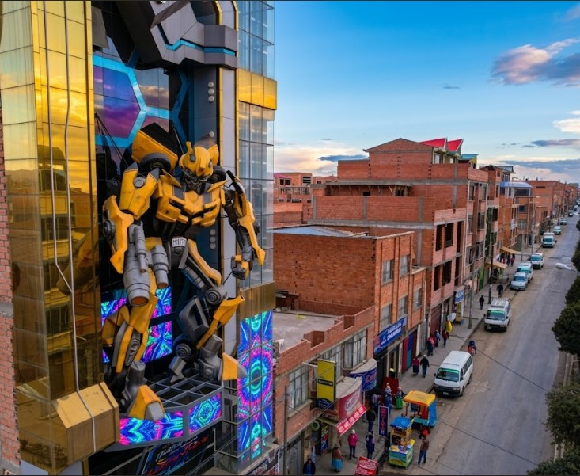
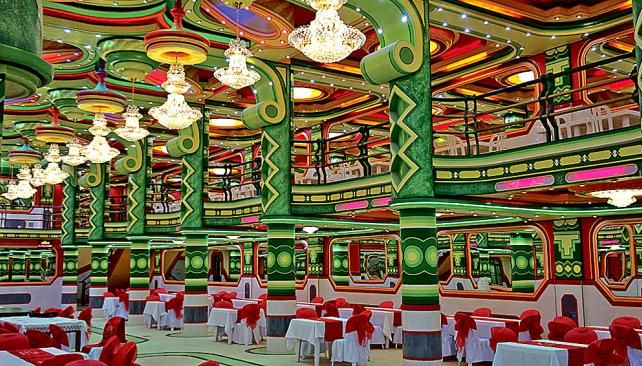
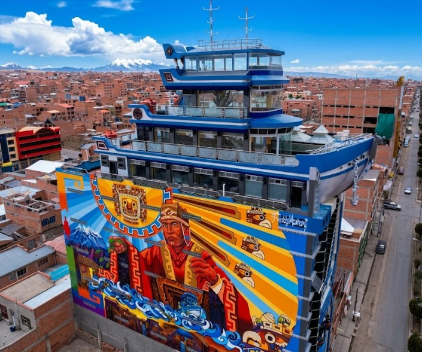

Recorrido
Las Paradas
del Circuito
El cholet más fotografiado de El Alto. Su diseño náutico-andino fusiona la forma de un crucero trasatlántico con colores y símbolos de la cosmovisión aymara.

Diseñado por el maestro Freddy Mamani Silvestre. Fachadas en colores vibrantes y salones interiores repletos de espejos y detalles dorados que deleitan todos los sentidos.

El interior más opulento del circuito. Pan de oro, arabescos geométricos y una iluminación teatral crean un ambiente de lujo ancestral sin comparación.

Desde las cocinas industriales hasta los penthouses privados, el Titanic es la experiencia más completa y significativa del circuito Neoandino.

Un almuerzo gourmet en los salones del Ingenio como cierre perfecto del circuito. Arte neoandino fusionado con la gastronomía boliviana de alta cocina.